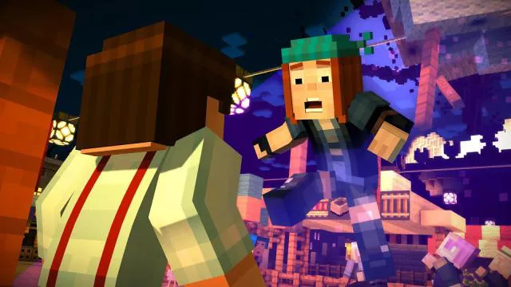

Minecraft. Više od igrice!
Utjecaj Minecrafta proteže se izvan digitalnog svijeta, s primjerima poput stvaranja stvarnog božićnog drvca koje upravljaju prekidači iz Minecrafta.
Popularnost Minecrafta dovela je do stvaranja igara inspiriranih njegovim blokovitim dizajnom, poput Ace of Spades, Crossy Road i CubeWorld. Neke igre se smatraju klonovima, uključujući mehanike rudarenja i izrade.
Minecraft je surađivao s kampanjom Hour of Code kako bi potaknuo djecu da uče kodiranje na zabavan i poznat način. Tutorial koji pružaju Minecraft i kampanja Hour of Code čini kodiranje ugodnim i pristupačnim.
Važan period za nezavisne developere
Minecraft, svojim neočekivanim usponom, označio je značajno razdoblje za nezavisne devolopere, posebno ističući se kao kulturni fenomen zahvaljujući brzom usponu Mojanga. Ovaj izuzetan uspjeh nije samo doprinio popularnosti igre, već je postao izvor inspiracije za nove kreatore diljem svijeta, pružajući im priliku da istraže vlastite inovativne ideje. Iako internet neprestano pršti novim igrama i kreativnim konceptima, Minecraft ostaje iznimno relevantan. Njegova popularnost ne leži samo u originalnim konceptima, već u snažnoj zajednici fanova koji su se udružili kako bi pružili igri zasluženu ljubav. Ova podrška ne samo da održava igru živom već i potiče kontinuiranu evoluciju i nadahnuće za buduće neovisne razvojnike.
Edukacijski alat
Mnoge škole koriste Minecraft u nastavi različitih predmeta, od elektronike i Redstonea do povijesti, matematike i jezika. Trodimenzionalno, potpuno prilagodljivo okruženje Minecrafta pruža nastavnicima priliku poučavati na inovativan način. Ovo je jedna od prvih video igara koja je omogućila obogaćivanje ljudskog uma kroz iskustva predodređenih lekcija instruktora. Za razliku od drugih igara usredotočenih na poučavanje, Minecraft je posebno prilagodljiv. Nastavnici mogu virtualno voditi učenike kroz vrijeme i prostor, pružajući vizualnu reprezentaciju stvarnih mjesta i događaja iz povijesti, sve unutar učionice.
Put do programiranja
Započeti s kodiranjem nikada nije bilo jednostavnije. Minecraft surađuje s kampanjom Hour of Code kako bi potaknuo djecu da zakorače u svijet programiranja. Pruža im alate i obrazovanje na zanimljiv način, potičući strast za učenjem. Kroz tutorial kampanje Minecrafta i Hour of Code, igrači dobivaju podršku da istraju u učenju korak po korak dok ne postignu uspjeh. Ovaj pristup ne samo da čini programiranje izuzetno zabavnim već i učinkovitim, omogućavajući djeci da razvijaju svoje vještine s pouzdanim smjernicama. Umjesto apstraktnog pristupa, Minecraft i Hour of Code pružaju konkretnu podršku koja potiče samopouzdanje kod mladih kodera. S ovim poticajem, nova generacija devolopera i programera može razviti temeljne vještine koje će im pomoći u budućnosti, gradeći most između kreativnosti i tehnologije.